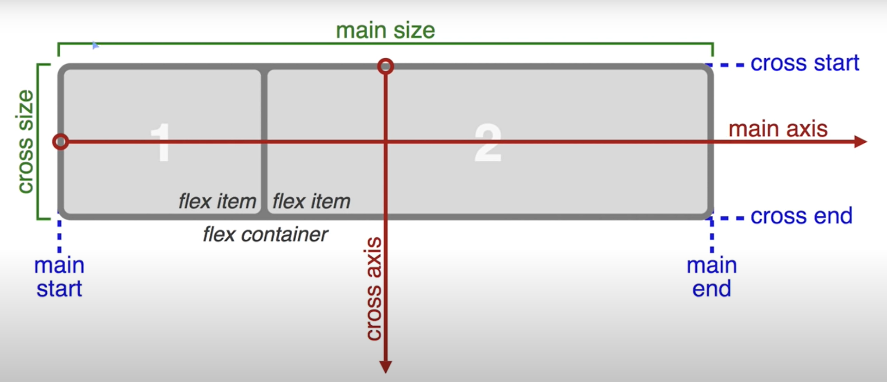

通用概念
- Inline styles: 直接加在tag中的屬性，例如加在p tag中的屬性
- Style block: 使用style tag，把需要的style寫在starting tag跟closing tag之間
- 每個element可以使用超過一個自定義的class，只需要用逗號隔開，例如class="style-1, style-2"
- ID近似於class，差別在於每個element只能有一個ID
- ID當中設定的attribute會優先於class被使用
- 每一個html element基本上都是一個長方形，其中有三個properties：padding、margin、border
- Padding表示的是Element周圍的空間，Margin是Element以外的空間
- Absolute types of length: px, in, cm, mm
- Relative units of length: em, ex, rem
- 上級的element所套用的attribute會自動繼承給下面層級的element(若下級[更精確的層級]的element沒有再指定attribute覆蓋的話)
- 若在同一個element中對相同的attribute(例如color)使用兩個class定義，則會取用在style tags間較晚定義的class
- 承上，若在同一個element中對相同的attribute(例如color)使用class和id定義，則會取用在id定義的內容
- 承上，inline styles的優先序高於class和id
- 承上，使用important關鍵字可以將一個class的優先序設置為最高，例如：.pink{ color: pink !important; }
- Hex Code由一個#加上六個16進位數字組成，例如#ABC132；前面兩個數字代表紅色，中間兩個數字代表綠色，後面兩個數字代表藍色
- 若Hex Code的紅綠藍都各是同樣的一對數字(例如#00FF00)，則可以縮短，舉例來說：#00FF00 = #0F0
- RGB value由三個0到255，分別代表紅綠藍的數字組成，例如rgb(100, 200, 250)
- 創建variable時要從兩個-開始，例如--my-variable
- 在一個element的class使用variable時，定義該variable的class必須在更上層的element中被使用
- 若要不被上述條件限制，則可以在style tags間的:root { }中定義variable
- 在:root { }中定義的variable可以在自定義的class中使用同樣的名字override
- TODO: 學會Media Query
- 在CSS grid中，每一個方格都是一個cell
Use Inline Styles to Change the Color of Text
範例：改變h4標題的顏色為藍色
方法：在h4的starting tag中，h4以後加上 style="color: blue;"Use CSS Selectors to Style Elements
範例：讓所有h6 tag的文字都變成紅色
方法：在style的兩個tag之間定義h6 {color: red;}Use a CSS Class to Style an Element
範例：將這句話的顏色變成綠色作法：在style的兩個tag之間定義.green-text {color: green;} (在最前面加上一個.來做自定義的class)
在想要改變的tag中加上class="green-text"
CSS class可以同時被用在多個不同的html element上
Change the Font Size of an Element
範例：將這句話的顏色變成紅色且大小為30px作法：使用自定義的CSS class .red-30px-font {color: red; font-size: 30px;}
Set the Font Family of an Element
範例：將後面的字體改成 monospace作法：使用自定義的CSS class .monospace-font {font-family: monospace;}
Import a Google Font
範例：將後面的字體改成Lobster作法：用link tag輸入Lobster的字體，再使用自定義的CSS class .lobster-font {font-family: Lobster;}
Specify How Fonts Should Degrade
在style中指定字體時指定超過一個字體，若列出的字體中的第一個無法使用就會嘗試使用下一個，以此類推。例如：font-family: Helvetica, monospace;
Size Your Images
範例：將圖片的寬度指定為300px
作法：使用自定義的CSS class .larger-image {width: 300px;}
Add Borders Around Your Elements
範例：讓後面的字體有寬度為5px、深藍色的實線外框，且外框的角落是圓弧形 BORDER作法：使用自定義的CSS class .my-border {border-color: darkblue; border-width: 5px; border-style: solid; border-radius: 5px;}
Make Circular Images with a border-radius
範例：讓圖片出現在圓形的外框中
作法：使用自定義的CSS class .circular-image {border-color: black; border-width: 5px; border-style: dotted; border-radius: 50%;}
Give a Background Color to a div Element
範例：
讓這塊文字的背景變成咖啡色
作法：在div tag中使用自定義的CSS class .brown-background { background-color: brown;}
Set the id of an Element and Use an id Attribute to Style an Element
範例：使用id將這段文字變成綠色 作法：在style的兩個tag之間定義 #my-first-id { color: green; } (在最前面加上一個#來做自定義的id)在想要改變的tag中加上id="my-first-id"
CSS id只能被用在一個html element上
Adjust the Padding of an Element
紅色框框使用.red-box
藍色框框使用.blue-box
Adjust the Margin of an Element
紅色框框使用.red-box2
藍色框框使用.blue-box2
Add a Negative Margin to an Element
紅色框框使用.red-box3
藍色框框使用.blue-box3
Add Different Padding to Each Side of an Element
四個邊有各自的padding
Add Different Margins to Each Side of an Element
四個邊有各自的margin
Use Clockwise Notation to Specify the Padding(Margin) of an Element
在padding:後依序設定上右下左的padding，同樣的方法也可用於margin
Use Attribute Selectors to Style Elements
範例：讓所有type是radio的element都有20px的margin作法：在style tags間定義[type='radio'] { margin: 20px; }
Use Hex Code for Specific Colors
範例：使用Hex Code指定這行字的顏色為#3e99d6作法：在element中指定style="color: #3e99d6;"
Use RGB values to Color Elements
範例：使用RGB指定這行字的顏色為綠色作法：在element中指定style="color: rgb(0, 255, 0);"
Use CSS Variables to change several elements at once
範例：見代碼中的.penguin部分，其中用--penguin-skin: black;等等指定了--penguin-skin、--penguin-belly跟--penguin-beak三個變量並在指定的class中，例如.penguin-top中使用：background: var(--penguin-skin, gray);，其中gray為備用的值
Create Your First CSS Grid
在style中定義.container，當中指定display: grid;，在將這個class使用在div tag上，一次應用到其中所有的元素1
2
3
4
5
Add Columns with grid-template-columns
在.container中加入grid-template-columns:10% auto 100px 2fr;，container中就會以四個格子為一列顯示Add Rows with grid-template-rows
在.container中加入grid-template-rows: 50px 50px;，container中就會分割成三個高度為50px的列Create a Column Gap Using grid-column-gap
在.container中加入column-gap: 20px;，container中的各行之間就會有20px的空間Create a Row Gap using grid-row-gap
在.container中加入row-gap: 5px;，container中的各列之間就會有5px的空間Add Gaps Faster with grid-gap
在class中加入gap property指定一個數字：將行和列的gap同時設置成該數字，例如gap: 10px
指定兩個數字：第一個數字為列的gap，第二個數字為行的gap，例如gap: 10px 20px
Use grid-column to Control Spacing
grid-column用於設置一個格子項將佔據多少橫向空間grid-column property輸入兩個參數，代表左右邊界的序數
grid-column property的邊界的序數由左至右依序從1開始，若一個表格是3X3則最左邊為1，最右邊為4
範例：讓5號格子往右多佔一格
作法：在.d5中加入grid-column: 1 / 3;
Use grid-row to Control Spacing
grid-row用於設置一個格子項將佔據多少縱向空間grid-row property輸入兩個參數，代表上下邊界的序數
grid-row property的邊界的序數由上至下依序從1開始，若一個表格是3X3則最上面為1，最下面為4
範例：讓5號格子往下多佔一格
作法：在.d5中加入grid-row: 2 / 4;
Align an Item Horizontally using justify-self
範例：讓3號格子縮減寬度到剛好符合內容的文字作法：在.d3中加入justify-self: center;
Align an Item Vertically using align-self
範例：讓3號格子縮減高度到剛好符合內容的文字並置底作法：在.d3中加入align-self: end;
Align All Items Horizontally using justify-items
1
2
3
4
5
作法：在container的class(.container2)中加上justify-items: center;
Align All Items Vertically using align-items
範例：讓container中的所有格子都縮減高度到剛好符合內容的文字並置底作法：在container的class(.container2)中加上align-items: end;
Divide the Grid Into an Area Template
在.container2中加上grid-template-areas:
"header header header"
". content content"
"footer footer footer";
即可將3X3的所有對應位置的cell設置一個詞
其中若指定一個cell對應的詞為'.'則代表它是一個empty cell
Place Items in Grid Areas Using the grid-area Property
範例：將5號格子放置在footer的位置作法：在.item5中加上grid-area: footer;
Use grid-area Without Creating an Areas Template
範例：不使用創建好的Areas Template，使用格子對應的邊界(座標)指定2號格子的位置作法：在.item2中加上grid-area: 1/1/2/3;
四個數字分別代表上/左/下/右
Reduce Repetition Using the repeat Function
使用repeat function來重複多次property的指定範例：使用repeat function來替換.container2中的grid-template-rows: 100px 50px 100px 50px;
作法：改寫成grid-template-rows: repeat(2, 100px 50px);
Limit Item Size Using the minmax Function
範例：使用minmax function指定container中格子的寬度在一定範圍內縮放 作法：改寫grid-template-columns: repeat(3, 100px);成grid-template-columns: repeat(3, minmax(90px, 120px));Create Flexible Layouts Using auto-fill
讓html自動填滿欄數，而不是指定特定的欄數範例：將grid-template-columns: repeat(3, minmax(90px, 120px));中的reapeat function改成repeat(auto-fill), minmax(90px, 120px))
Create Flexible Layouts Using auto-fit
效果同auto-fill，差別在於auto-fit一定會讓橫向的空間填滿Use Media Queries to Create Responsive Layouts
header
advert
paragraph1
paragraph2
footer
grid-template-areas:
"header"
"advert"
"content"
"footer";
另外用Media Queries來定義寬度超過1000px以上時的配置
@media (min-width: 1000px) {
.container3 {
grid-template-columns: auto 1fr;
grid-template-rows: auto 1fr auto;
grid-template-areas:
"advert header"
"advert content"
"advert footer";
}
}
Create Grids within Grids
範例：把.item8做成grid作法：在.item8中加上display: grid; 和 grid-template-columns: auto 1fr; 並在使用.item8的element中加入新的element
Use display: flex to Position Two Boxes
作法：在#box-container中指定display: flex;，使其成為一個flex container
Add Flex Superpowers to the Tweet Embed
在一個區塊內的所有元素都加上display: flex;使他們整齊排列Use the flex-direction Property to Make a Row
display: flex;預設會讓container內的元素由左至右排序可以加上flex-direction: (方向);來改變排序方向
方向可以是row(預設)、row-reverse、column、column-reverse等
Use the flex-direction Property to Make a Column
使用flex-direction: column;Align Elements Using the justify-content Property
範例：將container中的element根據main axis置中對齊
作法：在#box-container中指定justify-content: center;
Align Elements Using the align-items Property
範例：將container中的element根據cross axis置中對齊作法：在#box-container中指定align-items: center;
Use the flex-wrap Property to Wrap a Row or Column
Use the flex-shrink Property to Shrink Items
在element的id(例如#box-1)中加上flex-shrink: (比例);來指定各個元素收縮的比例Use the flex-grow Property to Expand Items
在element的id(例如#box-1)中加上flex-grow: (比例);來指定各個元素擴張的比例Use the flex-basis Property to Set the Initial Size of an Item
使用flex-basis設置flex-shrink或flex-grow處理以前的初始大小例如：flex-basis: 20em;
Use the flex Shorthand Property
使用精簡版的property flex來一次設置flex-shrink、flex-grow及flex-basis例如：flex: 2 1 150px; 其中三個數字分別為flex-shrink、flex-grow及flex-basis
Use the order Property to Rearrange Items
使用order重新排序element在container中的順序，例如order: 2; 或order: 1;Use the align-self Property
與align-items不同，align-self用於各自的item範例：讓使用#box-2的elememt置中
作法：在#box-2加入align-self: center;